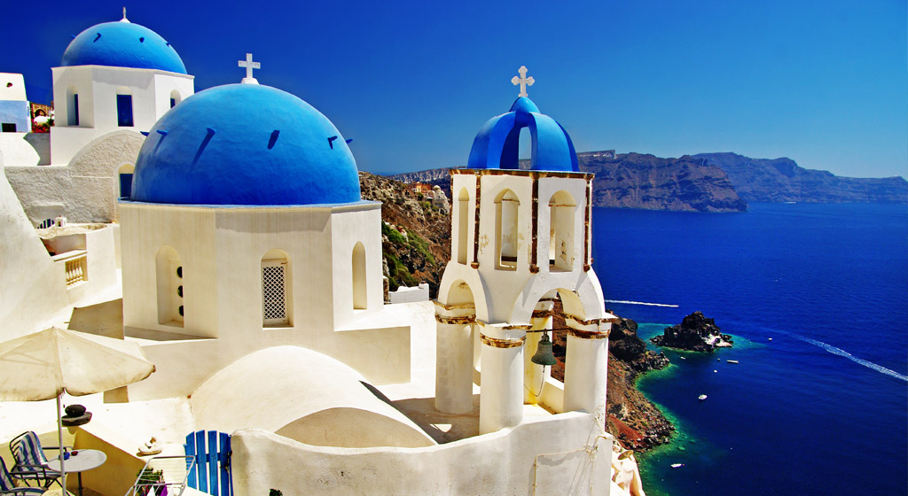
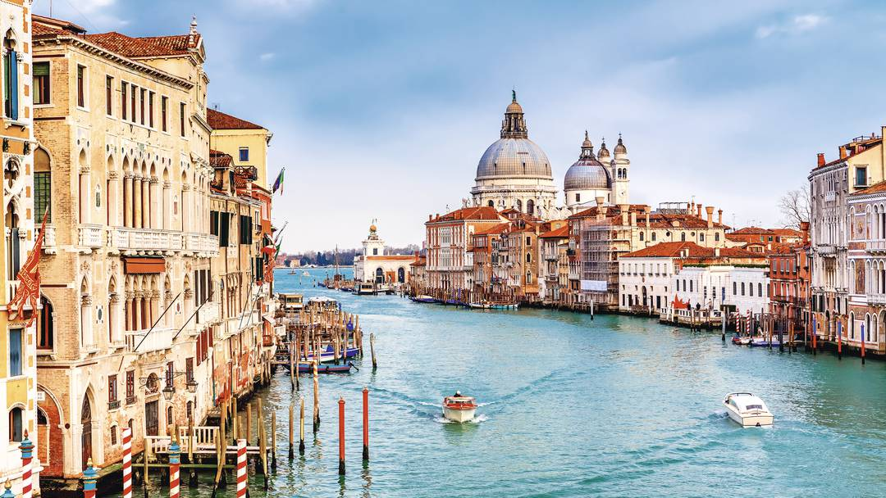
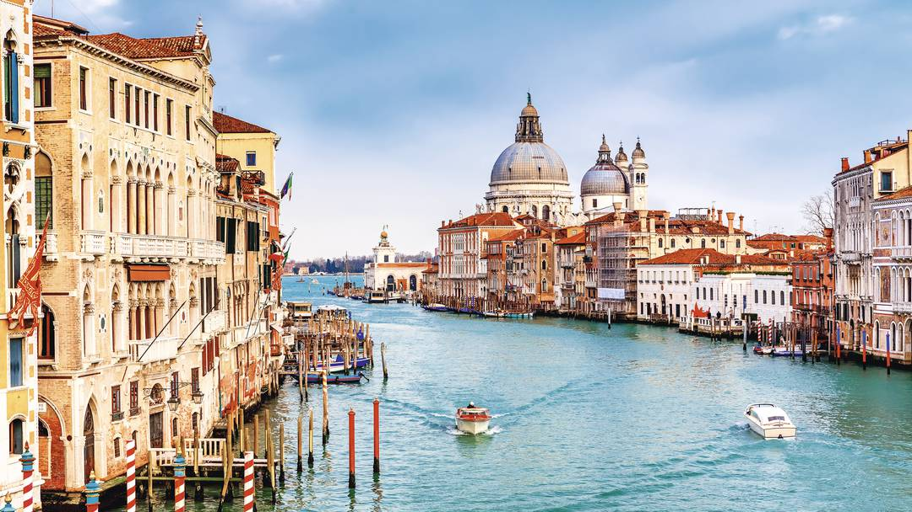

Podróże
Uwielbiam podróżować. Moim ulubionym kierunkiem są kraje śródziemnomorskie. Zwiedziłem już Włochy, Grecję, Węgry, Bułgarię oraz Chorwację. Interesuje mnie również poznawanie rodzinnych okolic, piękna polskiej natury.  
